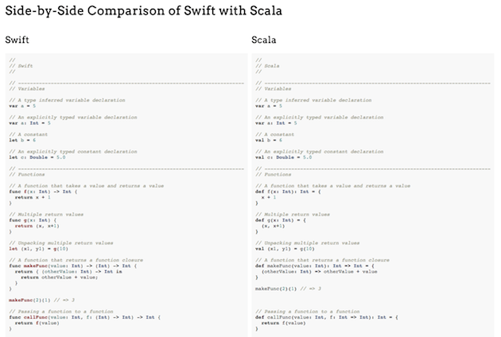

Swift is a modern multi-paradigm programming language that shares some convenient features already available in other current generation languages. My personal feeling is that Scala has had a heavy influence on its design. In this post I want to explore the similarities and differences to see how true this may be.
I was lucky enough to attend Daniel Steinberg’s excellent Swift Tutorial at NSScotland 2014. It was very good and covered the basics thoroughly. I would recommend attending one if he is teaching near you.
I felt immediately at home with Swift. Almost every language feature introduced felt familiar because it felt and often looked just like equivalent features in Scala. Superficially, it seemed like Swift was basically some good bits of Scala brought to a compile-to-native language for Mac/iOS.
This is of course a bit subjective. Unsurprisingly, while talking to fellow tutorial attendees in the breaks everyone had similar feelings but cited different languages. I heard people say Google’s Go, JavaScript or C# were most similar to them.
My nerdy curiosity was sufficiently piqued that I felt I wanted to compare some syntax side-by-side. So I did (if anything to prevent anyone else having to carry out this geeky activity), enjoy, you’re welcome. So far only Scala is compared, but a Go comparison is under development and I think C# is worth a look too.
So, other than the obvious difference that Scala runs on the JVM and Swift compiles to native code, how do they compare? Click the image below to access the side-by-side comparison:
 Side-by-Side Comparison of Swift to Scala
Similarities:
override keyword.for loop for iterating over sequences.map, reduce, filter. However Swift stops short of
implementing flatMap, foldRight, foldLeft and so on.case
statements with no implicit fallthroughDifferences:
class types, Swift has a pass-by-value
struct type like C/C++/C#. Scala only has the former.Neither of the above are exhaustive, but I hope the points worth noting are included. So it looks like there are a lot of common features, sometimes with no more than syntactic differences. So what do you think, is Scala the major influence I feel it is?